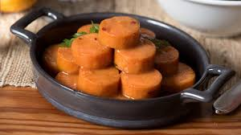

Maple Glazed Sweet Potatoes

Description
I made this for Thanksgiving dinner and my family went crazy over it. It is simple, looks great on the table and has already been requested for Christmas dinner! This recipe can be adjusted as you like by adding more or less bacon and onions.
Ingredients
- 4 pounds sweet potatoes, peeled and cut in 1-inch chunks
- 2 tablespoons olive oil
- 1 teaspoon salt
- ½ teaspoon ground black pepper
- 5 slices smoked bacon, chopped
- 1 pound onions, thinly sliced
- 1 cup pure maple syrup
- 2 teaspoons fresh thyme
Steps
-
Preheat oven to 425 degrees F (220 degrees C). Toss the sweet potato chunks, olive oil, salt, and black pepper in a large bowl, and spread the sweet potatoes out onto a large rimmed baking sheet.
-
Roast in the preheated oven until browned and tender, about 40 minutes; stir after the first 20 minutes.
-
Cook the bacon until crisp and brown in a large skillet over medium heat, about 10 minutes; transfer bacon to a bowl, but leave the grease in the skillet. Cook the onions in the bacon grease until browned, about 10 minutes, stirring frequently. Reduce heat to low, and cook the onions until very soft, brown, and sweet, another 10 to 15 minutes. Stir often. Mix the onions with the bacon in the bowl, and set aside.
-
Pour the maple syrup into the hot skillet with the thyme, and bring to a rolling boil. Boil the syrup until reduced by half, 3 to 4 minutes. Place the roasted sweet potatoes and onion-bacon mixture into the skillet, and stir to coat the vegetables with maple glaze. Transfer to a serving dish.
Home